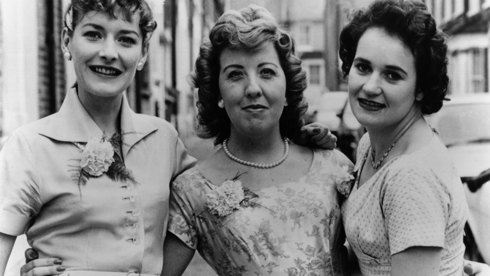
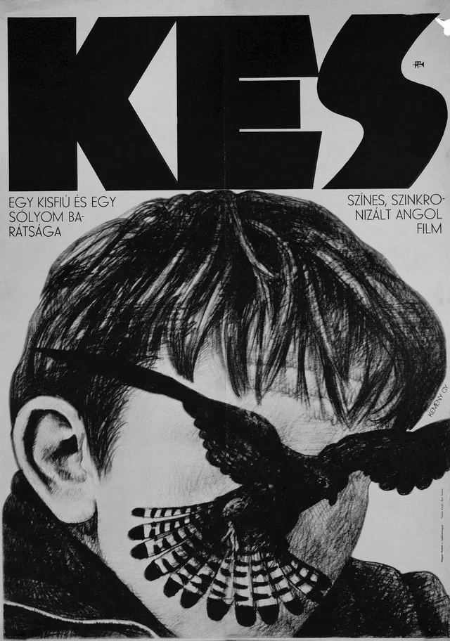

El cine inglés no es una corriente establecida como tal, este movimiento surge a partir del “welfare state”, plan gubernamental de ayuda asistencialista; se buscaba mejorar la calidad de vida por medio de un seguro social sistemas de salud, vivienda y educación pública, pero el alcance de este programa fue deficiente, los beneficios se acortaron y la falta de administración o atención a la aplicación del programa, hicieron que no se lograran cumplir con los propósitos del mismo. Las problemáticas que surgieron y siguieron a partir del programa fueron de las principales temáticas que se retomaron en el free cinema, a partir del movimiento “Angry Young Men”, como la respuesta de los jóvenes británicos ante la desigualdad social, el cine propagandístico, lo conservador, la falta de derechos laborales y la pérdida de la identidad nacional; inspirados en la Nouvelle vague, el Neorrealismo Italiano, el punk británico, etc., los artistas buscaban crear una nueva etapa para el cine y la literatura en la que ahora el protagonista sería la clase obrera, reivindicándolos brindándoles una identidad, una voz y dignidad, entendiendo la situación a la que están sujetos, humanizando su estilo de vida.
Las historias ya no tenían filtros acerca de los temas que se podían hablar en ellas, la violencia, la decadencia e incompetencia del estado, la injusticia, etc., mostrando la Inglaterra de las personas que viven en ella, presentando a la mayoría silenciosa. Sus principales representantes son Lindsay Anderson, Ken Loach, Tony Richardson, Karel Reisz, Lorenza Mazetti, entre otros. Todos ellos buscaban lo mismo, hacer un cine con la libertad de hablar por los que la mayoría evitan ver.

